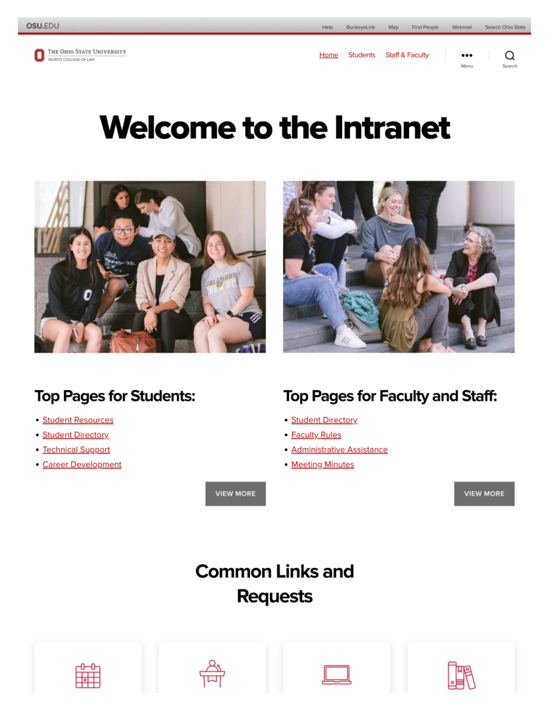
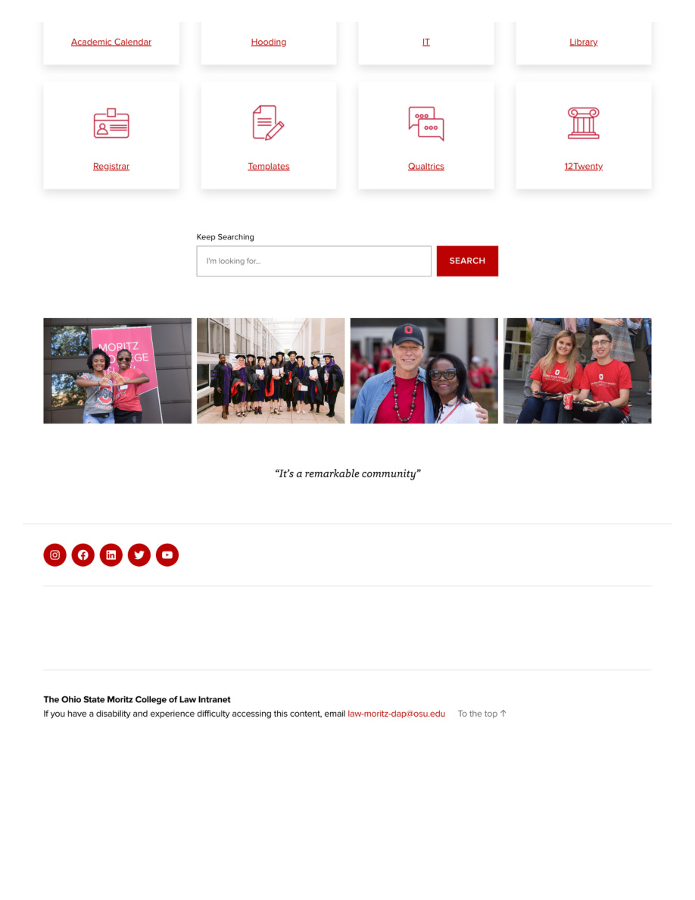
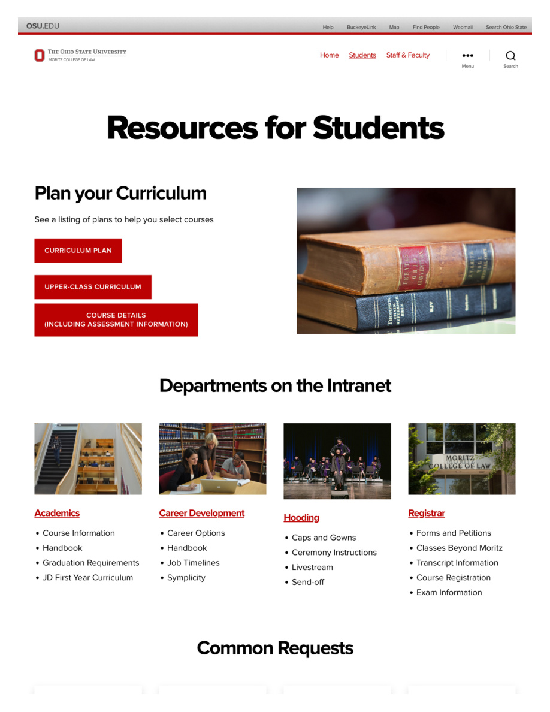
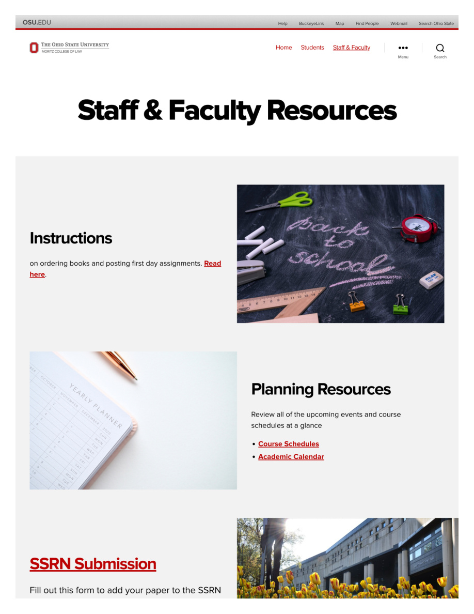
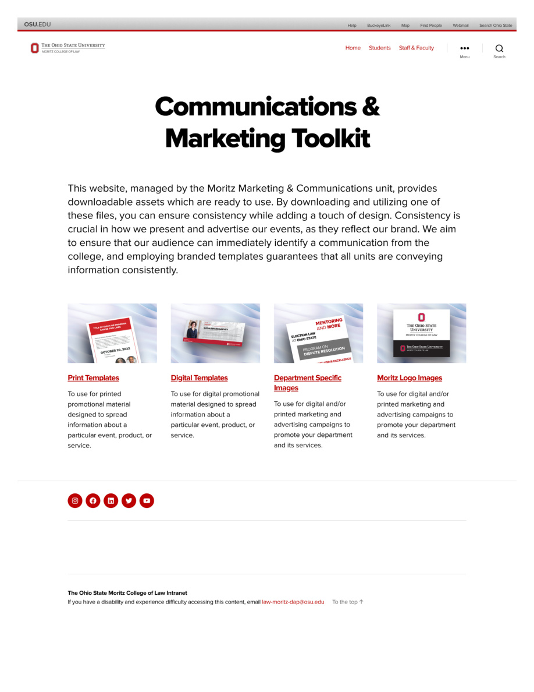

OSU Moritz College of Law Intranet
The Ohio State University, Moritz College of Law
Moritz is ranked #34 nationally by US News, with 562 full-time JD students and 93 faculty members. The college was under pressure to improve its public profile and resource accessibility, while competing for students and faculty against more visible peer institutions.
The existing intranet was legacy and hard-coded, making updates slow, inconsistent, and entirely dependent on technical staff. Faculty and students struggled to find basic resources, and the college had no scalable way to maintain brand consistency across communications.
Migrate the intranet to a CMS, redesign the information architecture to serve two distinct audiences (students and staff/faculty), and build a self-serve communications toolkit so departments could produce on-brand materials without relying on the central team.
Intranet Homepage
Designed around two distinct user paths, Students and Staff & Faculty, so visitors could orient immediately. Quick-link icon cards surfaced the most common requests without requiring search. Community photo strips and a search bar provided fallback navigation.


Resources for Students
Consolidated curriculum planning, department directories, and common requests into a single, scannable page. Department cards with photos and sub-links reduced the number of clicks to reach key resources. Icon-based request tiles covered the most repeated student actions.

Staff & Faculty Resources
A dedicated section for administrative and academic staff covering planning resources, faculty grant applications, HR, IT, health and wellness, and committee access, all surfaced through a consistent icon-card system with a searchable directory below.

Communications & Marketing Toolkit
Built a self-serve branded asset hub for the college, providing downloadable print templates, digital templates, department-specific images, and logo files. Any department could produce on-brand communications without submitting a request to the central team, reducing bottlenecks and improving consistency across all owned channels.

- Led the full migration from a legacy hard-coded site to a CMS, including scoping, stakeholder alignment, and build
- Designed the information architecture: audience segmentation, navigation hierarchy, and content taxonomy
- Built and maintained all page templates, ensuring accessibility compliance throughout
- Managed distribution lists, access permissions, and communication requests across all owned channels
- Created the Communications and Marketing Toolkit to reduce dependency on the central team and standardise branded asset production
- Coordinated ongoing content updates, production schedules, and cross-departmental requests across a 7-year tenure
Delivered measurable improvements in UX and resource findability within the first quarter post-launch. The CMS migration gave the college full editorial independence: content updates that previously required developer intervention could be handled directly by the communications team. The toolkit reduced ad hoc template requests and standardised how the college presented itself across all channels.